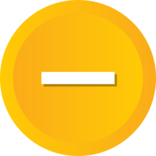

<ion-header>
  <ion-toolbar color="tertiary">
    <ion-buttons slot="start">
      <ion-back-button routerLink="/menu-arquero"></ion-back-button>
    </ion-buttons>
    <ion-title>Listado de solicitudes</ion-title>
  </ion-toolbar>
</ion-header>

<ion-content>
  <br/>
  
  
  
  
  <ion-grid>
    <ion-row>
      <ion-col>
        <p style="text-align: left;padding-left: 10px;"> Aceptados</p> 
      </ion-col>
      <ion-col>
        <p style="text-align: left;padding-left: 10px;"> Rechazados</p> 
      </ion-col>
    </ion-row>
    <ion-row>
      <ion-col>
        <p style="text-align: left;padding-left: 10px;"> En espera</p> 
      </ion-col>
      <ion-col>
        <p style="text-align: left;padding-left: 10px;"> Anulado</p>  
      </ion-col>
    </ion-row>
  </ion-grid>
  <div *ngIf="!solicitudes || solicitudes.length == 0">
    <p class="centrarmensaje" style="margin-top: 10px;">No existe solicitudes enviadas.</p>
  </div>
  <ion-card *ngFor="let solicitud of solicitudes">
    
    <ion-card-header>
      <ion-card-subtitle>{{solicitud.fechasol}}</ion-card-subtitle>

    </ion-card-header>
  
    <ion-card-content>
      
      
      
      
      <br/>
      Horario {{ solicitud.horario }}
    </ion-card-content>
    <ion-button expand="block" [routerLink]="['/ver-solicitud', solicitud.id]">
      Ver
    </ion-button>
  </ion-card>
</ion-content>
